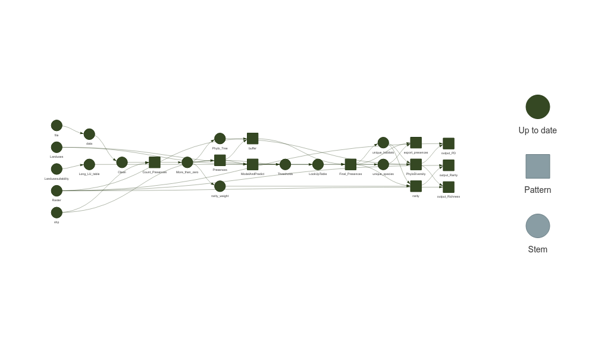

The goal of the SpeciesPoolR package is to generate potential species pools and their summary metrics in a spatial way. You can install the package directly from GitHub:
#install.packages("remotes")
remotes::install_github("derek-corcoran-barrios/SpeciesPoolR")No you can load the package
2 Using SpeciesPoolR Manually
2.1 Importing and Downloading Species Presences
2.1.1 Step 1: Reading and Filtering Data
If you are going to use each of the functions of the SpeciesPoolR manually and sequentially, the first step would be to read in a species list from either a CSV or an XLSX file. You can use the get_data function for this. The function allows you to filter your data in a dplyr-like style:
f <- system.file("ex/Species_List.csv", package="SpeciesPoolR")
filtered_data <- get_data(
file = f,
filter = quote(Kingdom == "Plantae" &
Class == "Magnoliopsida" &
Family == "Fabaceae")
)This will generate a dataset that can be used subsequently to count species presences and download species data as seen in table 2.1
| redlist_2010 | Kingdom | Phyllum | Class | Order | Family | Genus | Species |
|---|---|---|---|---|---|---|---|
| NA | Plantae | Magnoliophyta | Magnoliopsida | Fabales | Fabaceae | Vicia | Vicia sepium |
| NA | Plantae | Magnoliophyta | Magnoliopsida | Fabales | Fabaceae | Genista | Genista tinctoria |
| NA | Plantae | Magnoliophyta | Magnoliopsida | Fabales | Fabaceae | Trifolium | Trifolium vesiculosum |
| LC | Plantae | Magnoliophyta | Magnoliopsida | Fabales | Fabaceae | Vicia | Vicia sativa |
| NA | Plantae | Magnoliophyta | Magnoliopsida | Fabales | Fabaceae | Lathyrus | Lathyrus latifolius |
| NA | Plantae | Magnoliophyta | Magnoliopsida | Fabales | Fabaceae | Anthyllis | Anthyllis vulneraria |
| NA | Plantae | Magnoliophyta | Magnoliopsida | Fabales | Fabaceae | Vicia | Vicia sepium |
| NA | Plantae | Magnoliophyta | Magnoliopsida | Fabales | Fabaceae | Lathyrus | Lathyrus japonicus |
| NA | Plantae | Magnoliophyta | Magnoliopsida | Fabales | Fabaceae | Vicia | Vicia villosa |
Table 2.1: Species that will be used to generate species pools
2.1.2 Step 2: Taxonomic Harmonization
Next, you should perform taxonomic harmonization to ensure that the species names you use are recognized by the GBIF taxonomic backbone. This can be done using the Clean_Taxa function:
Clean_Species <- SpeciesPoolR::Clean_Taxa(filtered_data$Species)The resulting data frame, with harmonized species names, is shown in table 2.2
| Taxa | matched_name2 | confidence | canonicalName | kingdom | phylum | class | order | family | genus | species | rank |
|---|---|---|---|---|---|---|---|---|---|---|---|
| Vicia sepium | Vicia sepium | 99 | Vicia sepium | Plantae | Tracheophyta | Magnoliopsida | Fabales | Fabaceae | Vicia | Vicia sepium | SPECIES |
| Genista tinctoria | Genista tinctoria | 99 | Genista tinctoria | Plantae | Tracheophyta | Magnoliopsida | Fabales | Fabaceae | Genista | Genista tinctoria | SPECIES |
| Trifolium vesiculosum | Trifolium vesiculosum | 99 | Trifolium vesiculosum | Plantae | Tracheophyta | Magnoliopsida | Fabales | Fabaceae | Trifolium | Trifolium vesiculosum | SPECIES |
| Vicia sativa | Vicia sativa | 97 | Vicia sativa | Plantae | Tracheophyta | Magnoliopsida | Fabales | Fabaceae | Vicia | Vicia sativa | SPECIES |
| Lathyrus latifolius | Lathyrus latifolius | 98 | Lathyrus latifolius | Plantae | Tracheophyta | Magnoliopsida | Fabales | Fabaceae | Lathyrus | Lathyrus latifolius | SPECIES |
| Anthyllis vulneraria | Anthyllis vulneraria | 97 | Anthyllis vulneraria | Plantae | Tracheophyta | Magnoliopsida | Fabales | Fabaceae | Anthyllis | Anthyllis vulneraria | SPECIES |
| Lathyrus japonicus | Lathyrus japonicus | 99 | Lathyrus japonicus | Plantae | Tracheophyta | Magnoliopsida | Fabales | Fabaceae | Lathyrus | Lathyrus japonicus | SPECIES |
| Vicia villosa | Vicia villosa | 97 | Vicia villosa | Plantae | Tracheophyta | Magnoliopsida | Fabales | Fabaceae | Vicia | Vicia villosa | SPECIES |
Table 2.2: Taxonomicallty harmonized dataset
2.1.3 Step 3: Counting Species Presences
After harmonizing the species names, it’s important to obtain the number of occurrences of each species in your study area, especially if you plan to calculate rarity. You can do this using the count_presences function. This function allows you to filter occurrences by country or by a shapefile. Below is an example for Denmark:
# Assuming Clean_Species is your data frame
Count_DK <- count_presences(Clean_Species, country = "DK")The resulting data frame of species presences in Denmark is shown in table 2.3
knitr::kable(Count_DK, caption = "Counts of presences for the different species within Denmark")| family | genus | species | N |
|---|---|---|---|
| Fabaceae | Vicia | Vicia sepium | 2897 |
| Fabaceae | Genista | Genista tinctoria | 988 |
| Fabaceae | Trifolium | Trifolium vesiculosum | 0 |
| Fabaceae | Vicia | Vicia sativa | 17379 |
| Fabaceae | Lathyrus | Lathyrus latifolius | 684 |
| Fabaceae | Anthyllis | Anthyllis vulneraria | 8876 |
| Fabaceae | Lathyrus | Lathyrus japonicus | 3904 |
| Fabaceae | Vicia | Vicia villosa | 243 |
Table 2.3: Counts of presences for the different species within Denmark
Alternatively, you can filter by a specific region using a shapefile. For example, to count species presences within Aarhus commune:
shp <- system.file("ex/Aarhus.shp", package="SpeciesPoolR")
Count_Aarhus <- count_presences(Clean_Species, shapefile = shp)The resulting data.frame for Aarhus commune is shown int table 2.4
| family | genus | species | N |
|---|---|---|---|
| Fabaceae | Vicia | Vicia sepium | 283 |
| Fabaceae | Genista | Genista tinctoria | 27 |
| Fabaceae | Trifolium | Trifolium vesiculosum | 0 |
| Fabaceae | Vicia | Vicia sativa | 467 |
| Fabaceae | Lathyrus | Lathyrus latifolius | 41 |
| Fabaceae | Anthyllis | Anthyllis vulneraria | 153 |
| Fabaceae | Lathyrus | Lathyrus japonicus | 39 |
| Fabaceae | Vicia | Vicia villosa | 10 |
Table 2.4: Counts of presences for the different species within Aarhus commune
Now it is recommended to eliminate species that have no occurrences in the area, this is done automatically in the workflow version:
library(data.table)
Count_Aarhus <- Count_Aarhus[N > 0,]So that then we can retrieve the species presences using the function SpeciesPoolR::get_presences.
Presences <- get_presences(species = Count_Aarhus$species, shapefile = shp)
#> [1] "Geometry created: POLYGON ((10.401438 56.302419, 10.048024 56.355225, 9.886316 56.019928, 10.239729 55.966657, 10.401438 56.302419))"there we end up with 1070 presences for our 7 species.
2.2 Creating Spatial Buffers and Habitat Filtering
2.2.1 Step 1 Creating Buffers Around Species Presences
Once you have obtained the species presences within your area of interest, the next step is to create spatial buffers around these occurrences. These buffers simulate the potential dispersal range of each species. By doing so, you can assess the possible areas where each species could establish itself, considering a given dispersal distance.
To create these buffers, you’ll need a raster file that serves as a template for rasterizing the buffers. You’ll also specify the distance (in meters) that represents the dispersal range of the species.
Raster <- system.file("ex/LU_Aarhus.tif", package="SpeciesPoolR")
buffer500 <- make_buffer_rasterized(Presences, file = Raster, dist = 500)In the example above, the make_buffer_rasterized function creates a 500-meter buffer around each occurrence point of the species in the Presences dataset. The function uses the provided raster file as a template to rasterize the buffers.
The resulting data frame, buffer500, contains information on which raster cells are covered by the buffer for each species. The first 10 observations of this data frame are shown in Table 2.5.
| cell | species |
|---|---|
| 26 | Vicia sepium |
| 27 | Vicia sepium |
| 28 | Vicia sepium |
| 29 | Vicia sepium |
| 30 | Vicia sepium |
| 161 | Vicia sepium |
| 162 | Vicia sepium |
| 163 | Vicia sepium |
| 164 | Vicia sepium |
| 165 | Vicia sepium |
Table 2.5: Raster cells within the 500-meter buffer of each species
This table provides a detailed view of how the buffer overlaps with the raster cells, listing each cell and the corresponding species present within that buffer.
2.2.2 Step 2: Habitat Filtering
After creating the buffers, you may want to filter the areas further based on habitat suitability. For instance, you might only be interested in specific land-use types or habitats where the species is likely to thrive. This step typically involves using the raster data to mask or subset the buffer areas according to the desired habitat criteria.
2.3 Generating summary biodiversity statistics
2.3.1 Step 1 Generating Phylogenetic diversity metrics
In order to generate Phylogenetic Diversity measures, the first step is to generate a phylogenetic tree with the species we have, for that we will use the V.Phylomaker package function phylo.makerbased on the megaphylogeny of vascular plants (Jin and Qian 2019; Zanne et al. 2014), this means that we can only use this functions in species pools of plants.
In this case we use the generate_tree from SpeciesPoolR to do so:
tree <- generate_tree(Count_Aarhus)
#> [1] "All species in sp.list are present on tree."3 Running the SpeciesPoolR Workflow
If you prefer to automate the process and run the SpeciesPoolR workflow as a pipeline, you can use the run_workflow function. This function sets up a targets workflow that sequentially executes the steps for cleaning species data, counting species presences, and performing spatial analysis. This approach is especially useful for larger datasets or when you want to ensure reproducibility.
To run the workflow, you can use the following code. We’ll use the same species filter as before, focusing on the Plantae kingdom, Magnoliopsida class, and Fabaceae family. Additionally, we’ll focus on the Aarhus commune using a shapefile.
shp <- system.file("ex/Aarhus.shp", package = "SpeciesPoolR")
Raster <- system.file("ex/LU_Aarhus.tif", package="SpeciesPoolR")
run_workflow(
file_path = system.file("ex/Species_List.csv", package = "SpeciesPoolR"),
filter = quote(Kingdom == "Plantae" & Class == "Magnoliopsida" & Family == "Fabaceae"),
shapefile = shp,
dist = 500,
rastertemp = Raster
)
#> ▶ dispatched target Raster
#> ▶ dispatched target shp
#> ● completed target Raster [4.523 seconds]
#> ▶ dispatched target file
#> ● completed target shp [0 seconds]
#> ● completed target file [0 seconds]
#> ▶ dispatched target data
#> ● completed target data [0.357 seconds]
#> ▶ dispatched target Clean
#> ● completed target Clean [1.185 seconds]
#> ▶ dispatched branch Count_Presences_33538e94b3809372
#> ▶ dispatched branch Count_Presences_52d72a5ad405e933
#> ● completed branch Count_Presences_33538e94b3809372 [0.149 seconds]
#> ▶ dispatched branch Count_Presences_e70f77d9439a4770
#> ● completed branch Count_Presences_52d72a5ad405e933 [0.057 seconds]
#> ▶ dispatched branch Count_Presences_dea4ef8633a449a1
#> ● completed branch Count_Presences_e70f77d9439a4770 [0.029 seconds]
#> ▶ dispatched branch Count_Presences_69210fc440d13855
#> ● completed branch Count_Presences_dea4ef8633a449a1 [0.031 seconds]
#> ▶ dispatched branch Count_Presences_a61be030e01ebaf5
#> ● completed branch Count_Presences_69210fc440d13855 [0.026 seconds]
#> ▶ dispatched branch Count_Presences_974105e269324d3e
#> ● completed branch Count_Presences_a61be030e01ebaf5 [0.028 seconds]
#> ▶ dispatched branch Count_Presences_37d1f8d5f74d852c
#> ● completed branch Count_Presences_974105e269324d3e [0.036 seconds]
#> ● completed branch Count_Presences_37d1f8d5f74d852c [0.035 seconds]
#> ● completed pattern Count_Presences
#> ▶ dispatched target More_than_zero
#> ● completed target More_than_zero [0.001 seconds]
#> ▶ dispatched branch Presences_c112b37cd15959d6
#> ▶ dispatched branch Presences_af64bac105a08467
#> ● completed branch Presences_c112b37cd15959d6 [0.684 seconds]
#> ▶ dispatched branch buffer_626a53b08dfe709d
#> ● completed branch Presences_af64bac105a08467 [0.313 seconds]
#> ▶ dispatched branch buffer_0e19b8cb545404d2
#> ● completed branch buffer_626a53b08dfe709d [0.108 seconds]
#> ▶ dispatched branch Presences_daf8d6353bc80f0c
#> ● completed branch buffer_0e19b8cb545404d2 [0.236 seconds]
#> ▶ dispatched branch Presences_310adeccf6b44725
#> ● completed branch Presences_daf8d6353bc80f0c [0.666 seconds]
#> ▶ dispatched branch buffer_edb09c8ec5c9a988
#> ● completed branch Presences_310adeccf6b44725 [0.367 seconds]
#> ▶ dispatched branch buffer_b226446ac3154351
#> ● completed branch buffer_edb09c8ec5c9a988 [0.043 seconds]
#> ▶ dispatched branch Presences_e65f4227e8299cc4
#> ● completed branch buffer_b226446ac3154351 [0.028 seconds]
#> ▶ dispatched branch Presences_d4b9dc68293bd5b2
#> ● completed branch Presences_e65f4227e8299cc4 [0.356 seconds]
#> ▶ dispatched branch buffer_0a8436ee3d4f2644
#> ● completed branch Presences_d4b9dc68293bd5b2 [0.333 seconds]
#> ▶ dispatched branch buffer_cae8301e59fc4e01
#> ● completed branch buffer_0a8436ee3d4f2644 [0.035 seconds]
#> ▶ dispatched branch Presences_88937156c1302a12
#> ● completed branch buffer_cae8301e59fc4e01 [0.028 seconds]
#> ● completed branch Presences_88937156c1302a12 [0.294 seconds]
#> ● completed pattern Presences
#> ▶ dispatched branch buffer_a0190cbfdf5f6f1f
#> ● completed branch buffer_a0190cbfdf5f6f1f [0.032 seconds]
#> ● completed pattern buffer
#> ▶ ended pipeline [12.674 seconds]
3.1 How It Works
The run_workflow function creates a pipeline that:
1- Reads the data from the specified file path. 2- Filters the data using the provided filter expression. 3- Cleans the species names to match the GBIF taxonomic backbone. 4- Counts the species presences within the specified geographic area (in this case, Aarhus). 5- Generates a buffer around the species presences within the specified distance, for a template raster. 6- Generates a visual representation of the workflow (if plot = TRUE).
You can monitor the progress of the workflow and visualize the dependencies between steps using targets::tar_visnetwork(). The result will be similar to running the steps manually but with the added benefits of parallel execution and reproducibility.
This automated approach allows you to streamline your analysis and ensures that all steps are consistently applied to your data. It also makes it easier to rerun the workflow with different parameters or datasets.